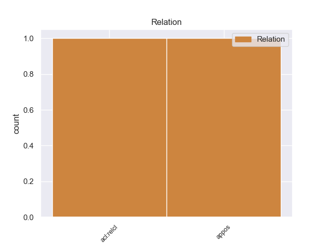
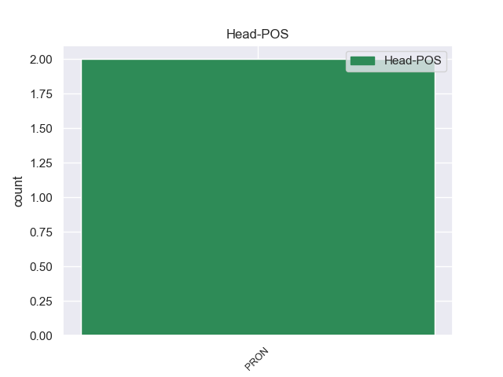
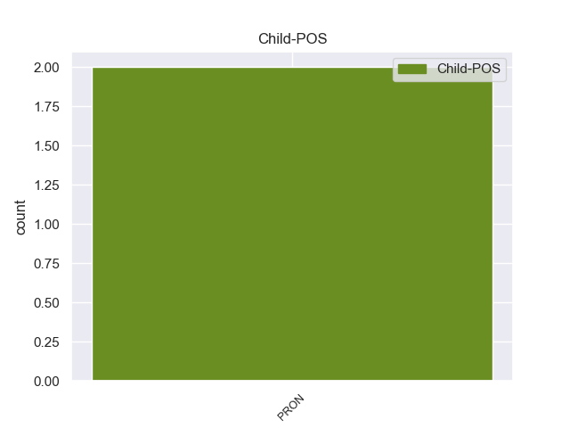

Distribution of features within this leaf



Agreement Rules sorted by frequency.
- When the dependent token is the relative clause modifier(acl:relcl) of the head token,
1 Es _ _ _ _ 0 _ _ _
2 un _ _ _ _ 0 _ _ _
3 parlamentario _ _ _ _ 0 _ _ _
4 muy _ _ _ _ 0 _ _ _
5 dotado _ _ _ _ 0 _ _ _
6 , _ _ _ _ 0 _ _ _
7 y _ _ _ _ 0 _ _ _
8 ha _ _ _ _ 0 _ _ _
9 defendido _ _ _ _ 0 _ _ _
10 este _ _ _ _ 0 _ _ _
11 caso _ _ _ _ 0 _ _ _
12 con _ _ _ _ 0 _ _ _
13 fuerza _ _ _ _ 0 _ _ _
14 y _ _ _ _ 0 _ _ _
15 convicción _ _ _ _ 0 _ _ _
16 en _ _ _ _ 0 _ _ _
17 todo _ _ _ _ 0 _ _ _
18 momento _ _ _ _ 0 _ _ _
19 , _ _ _ _ 0 _ _ _
20 pero _ _ _ _ 0 _ _ _
21 está _ _ _ _ 0 _ _ _
22 subestimando _ _ _ _ 0 _ _ _
23 su _ _ _ _ 0 _ _ _
24 propia _ _ _ _ 0 _ _ _
25 contribución _ _ _ _ 0 _ _ _
26 a _ _ _ _ 0 _ _ _
27 este _ _ _ _ 0 _ _ _
28 debate _ _ _ _ 0 _ _ _
29 , _ _ _ _ 0 _ _ _
30 porque _ _ _ _ 0 _ _ _
31 lo él PRON _ Case=Acc|Gender=Masc|Number=Sing|Person=3|PrepCase=Npr|PronType=Prs 0 _ _ _
32 que _ _ _ _ 0 _ _ _
33 él _ _ _ _ 0 _ _ _
34 y _ _ _ _ 0 _ _ _
35 otros _ _ _ _ 0 _ _ _
36 han _ _ _ _ 0 _ _ _
37 hecho _ _ _ _ 0 _ _ _
38 es _ _ _ _ 0 _ _ _
39 lo él PRON _ Case=Acc|Gender=Masc|Number=Sing|Person=3|PrepCase=Npr|PronType=Prs 31 acl:relcl _ _
40 que _ _ _ _ 0 _ _ _
41 nos _ _ _ _ 0 _ _ _
42 ha _ _ _ _ 0 _ _ _
43 permitido _ _ _ _ 0 _ _ _
44 alcanzar _ _ _ _ 0 _ _ _
45 una _ _ _ _ 0 _ _ _
46 posición _ _ _ _ 0 _ _ _
47 que _ _ _ _ 0 _ _ _
48 podemos _ _ _ _ 0 _ _ _
49 considerar _ _ _ _ 0 _ _ _
50 muy _ _ _ _ 0 _ _ _
51 acertadamente _ _ _ _ 0 _ _ _
52 como _ _ _ _ 0 _ _ _
53 posición _ _ _ _ 0 _ _ _
54 de _ _ _ _ 0 _ _ _
55 transacción _ _ _ _ 0 _ _ _
56 . _ _ _ _ 0 _ _ _
1 Además _ _ _ _ 0 _ _ _
2 , _ _ _ _ 0 _ _ _
3 consideramos _ _ _ _ 0 _ _ _
4 particularmente _ _ _ _ 0 _ _ _
5 importante _ _ _ _ 0 _ _ _
6 la _ _ _ _ 0 _ _ _
7 observación _ _ _ _ 0 _ _ _
8 de _ _ _ _ 0 _ _ _
9 que _ _ _ _ 0 _ _ _
10 la _ _ _ _ 0 _ _ _
11 recuperación _ _ _ _ 0 _ _ _
12 habida _ _ _ _ 0 _ _ _
13 en _ _ _ _ 0 _ _ _
14 algunas _ _ _ _ 0 _ _ _
15 regiones _ _ _ _ 0 _ _ _
16 -en _ _ _ _ 0 _ _ _
17 las él PRON _ Case=Acc|Gender=Fem|Number=Plur|Person=3|PrepCase=Npr|PronType=Prs 0 _ _ _
18 que _ _ _ _ 0 _ _ _
19 se _ _ _ _ 0 _ _ _
20 produjo- _ _ _ _ 0 _ _ _
21 fue _ _ _ _ 0 _ _ _
22 acompañada _ _ _ _ 0 _ _ _
23 de _ _ _ _ 0 _ _ _
24 un _ _ _ _ 0 _ _ _
25 mínimo _ _ _ _ 0 _ _ _
26 aumento _ _ _ _ 0 _ _ _
27 de _ _ _ _ 0 _ _ _
28 el _ _ _ _ 0 _ _ _
29 empleo _ _ _ _ 0 _ _ _
30 , _ _ _ _ 0 _ _ _
31 lo él PRON _ Case=Acc|Gender=Masc|Number=Sing|Person=3|PrepCase=Npr|PronType=Prs 17 appos _ _
32 que _ _ _ _ 0 _ _ _
33 impone _ _ _ _ 0 _ _ _
34 , _ _ _ _ 0 _ _ _
35 consiguientemente _ _ _ _ 0 _ _ _
36 , _ _ _ _ 0 _ _ _
37 nuevas _ _ _ _ 0 _ _ _
38 estrategias _ _ _ _ 0 _ _ _
39 de _ _ _ _ 0 _ _ _
40 desarrollo _ _ _ _ 0 _ _ _
41 , _ _ _ _ 0 _ _ _
42 con _ _ _ _ 0 _ _ _
43 bastante _ _ _ _ 0 _ _ _
44 mayor _ _ _ _ 0 _ _ _
45 nivel _ _ _ _ 0 _ _ _
46 de _ _ _ _ 0 _ _ _
47 preocupación _ _ _ _ 0 _ _ _
48 a _ _ _ _ 0 _ _ _
49 el _ _ _ _ 0 _ _ _
50 respecto _ _ _ _ 0 _ _ _
51 . _ _ _ _ 0 _ _ _
No disagree examples found.